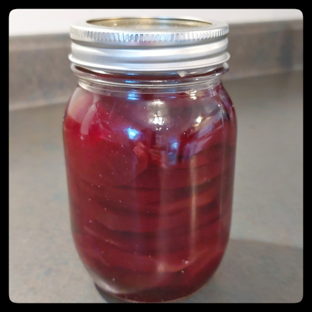

You'll get purple fingers preparing this earthy goodness.

beets
2 parts distilled or filtered water
3 parts pickling vinegar 5% acid
sugar
cloves
Clean and rinse the jars and lids.
Trim the roots off 10lbs of beets and boil for about 10-15 minutes until just barely soft all the way through.
Strain and let cool until they can be handled.
In a pot large enough to cover the jars, bring a full pot of tap water to boil.
In a separate pot, prepare the brine. Boil 4 cups filtered water, 6 cups vinegar, 2 cups sugar, 2 dozen cloves. Bring to boil.
Boil a kettle of tap water for topping up the water bath later.
Peel and slice the beets.
Place jars in the boiling water for a few minutes, drain, and rest on a towel.
Add the beet slices to the jars, packing just tight without squishing them.
Remove the cloves and pour boiling brine into jars, filling to 1/2" from the top.
Tap the jars or use a sterilized tool to remove any air bubbles.
Place the lids and tops in the boiling water for a few minutes, then remove and place on towel.
Water bath. Wipe the top of the jars, place on the lids, and screw on the tops just finger tight so the air can escape. Place the jars in the boiling water, keeping the jar upright so the liquid inside does not touch the rim. Top up with more boiling water from the kettle if needed.
Return to rolling boil then boil for 10 minutes.
Remove from the water bath, again keeping upright so the liquid does not touch the rim, and let cool for 12 hours without touching.
Store in a cool location, and wait 2 weeks before opening.